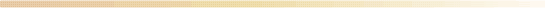

|
理毛エクセレントスカルプ＆ヘアープログレスとは、「発達」という意味です。
あなたの髪の美しさは、まだ80％以上眠っています。
今持っている髪質よりも、さらに発達させ、
美しさを呼び起こします。

|
ここでは、施術例を紹介します。
詳しくはお気軽におたずねください。
まずお客様にリラックスしていただき、髪に理水をつけた後、シャンプー
タイプのトリートメントＺ2を髪にたっぷり乗せ、15分〜20分程、東方美人
オリジナルマッサージを行います。 |
|
その後2〜3分程髪に染み込ませます。（プログレスタイム）
ゆっくり、髪質をしなやかにしています。
|
|
今度は髪質にあわせた理毛のローションやＺ4をつけます。 |
|
そしてマイクロミストで髪の内部までプログレスをし、コシのしっかりした
強い髪を造ります。 |
|
洗い流した後、理毛スキャルプローションを頭皮に塗布、これから
生まれてくる髪をプログレスします。 |
 |
髪質に合わせた植物ローションを付け、ヘアビューザーで仕上げます。
成長期に経験した髪のコシや輝き、透明感、心地よい手触りの毛髪に
蘇らせます。（仕上がりに個人差がございます。）
ぜひ、この艶と質感を体感してみてください。
（施術方法が変わる場合もございます。）
|
|